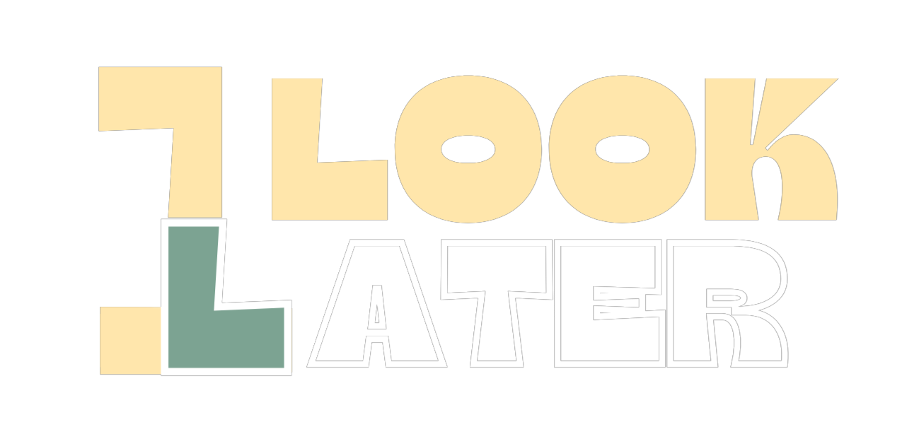

Παρακάτω θα δείτε τις οδηγίες που δόθηκαν στους 6 παρατηρητές ξεχωριστά πριν την αλληλεπίδραση τους με τον βασικό παίκτη:
"Θα συμμετάσχεις σε ένα πείραμα παρατήρησης που εξερευνά τη δύναμη και την ασάφεια της πρώτης εντύπωσης. Θα σου ζητηθεί να παρατηρήσεις ένα άτομο που δε γνωρίζεις, χωρίς να του μιλήσεις ή να αλληλεπιδράσεις μαζί του. Η παρατήρηση διαρκεί μερικά λεπτά και γίνεται σε σιωπή.
Αμέσως μετά, θα κληθείς να απαντήσεις σε ένα σύντομο ερωτηματολόγιο. Οι ερωτήσεις είναι συμβολικές: σου ζητούν να αποδώσεις αυτό το άτομο με χρώματα, εποχές, συναισθήματα και άλλα καθημερινά σύμβολα. Δεν υπάρχει σωστό ή λάθος. Σκοπός είναι να καταγραφεί η δική σου πρώτη εντύπωση.
Στη συνέχεια, θα έχεις την ευκαιρία να γνωρίσεις αυτό το άτομο και να συνομιλήσετε ελεύθερα. Αμέσως μετά, θα απαντήσεις ξανά στο ίδιο ερωτηματολόγιο — αυτήν τη φορά με βάση τη νέα σου εικόνα για το πρόσωπο που γνώρισες.
Το πείραμα καταγράφει πώς αλλάζει —ή δεν αλλάζει— η ματιά μας, όταν το άγνωστο πάψει να είναι ξένο.
Σκοπός δεν είναι να αποδώσεις την «αλήθεια», αλλά να καταγράψουμε το ίχνος της πρώτης εντύπωσης, όπως γεννιέται μέσα σου."